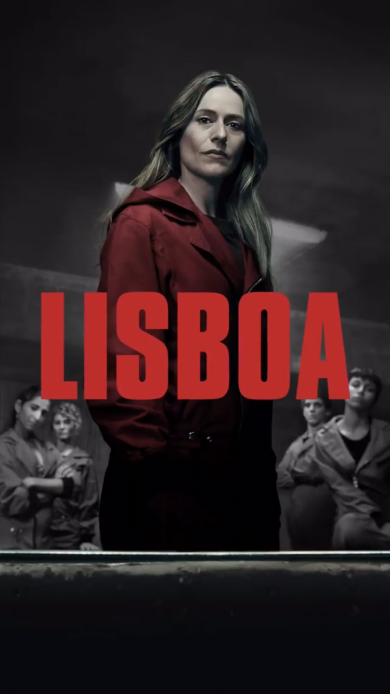
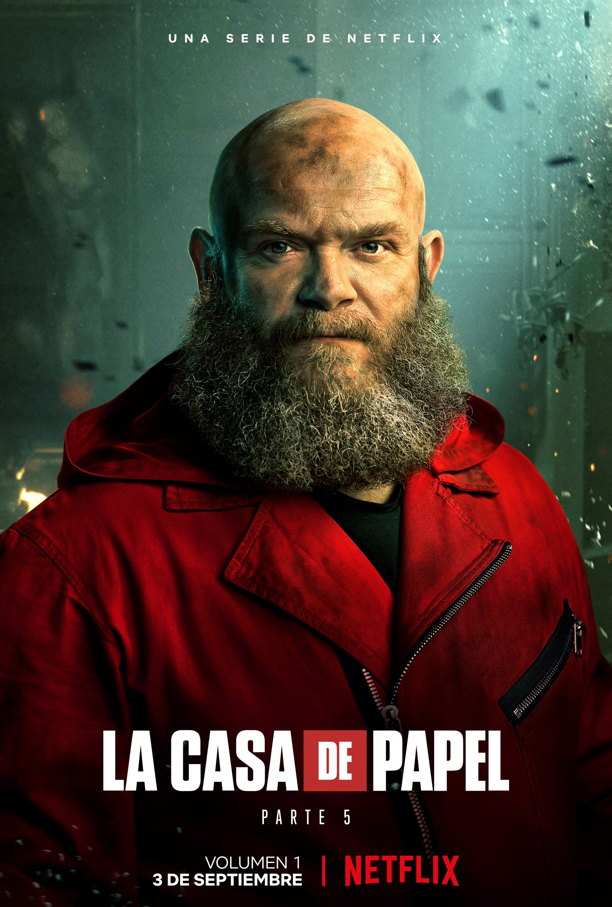
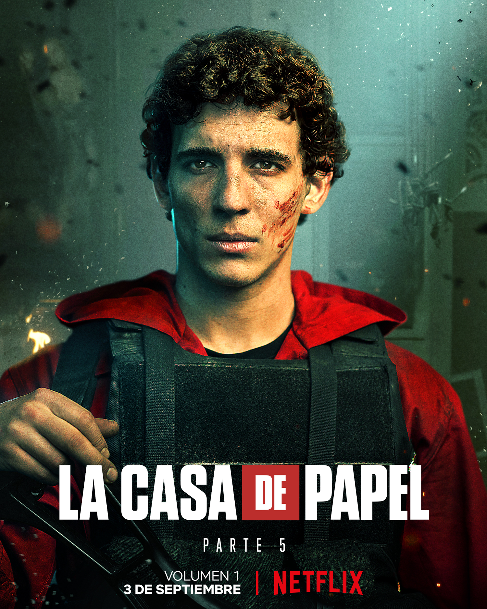

Descripción Serie
La casa de papel es una serie de televisión española creada por Álex Pina, producida por Atresmedia en sus inicios, aunque posteriormente por Netflix y con el periodista y guionista Javier Gómez Santander como coproductor ejecutivo.
PERSONAJES |
|||||||||
| TOKYO | |||||||||
| LISBOA |  | ||||||||
| NAIROBI | |||||||||
| HELSINKI |  | ||||||||
| RÍO |  | ||||||||